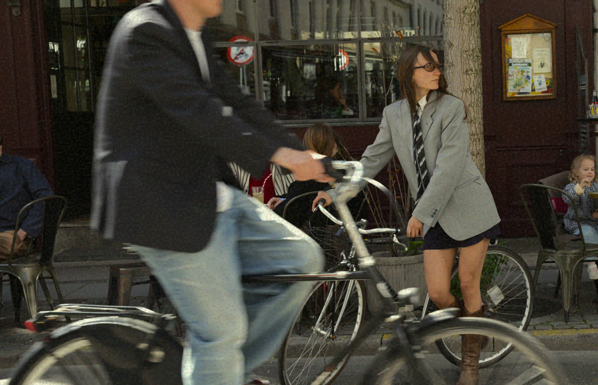
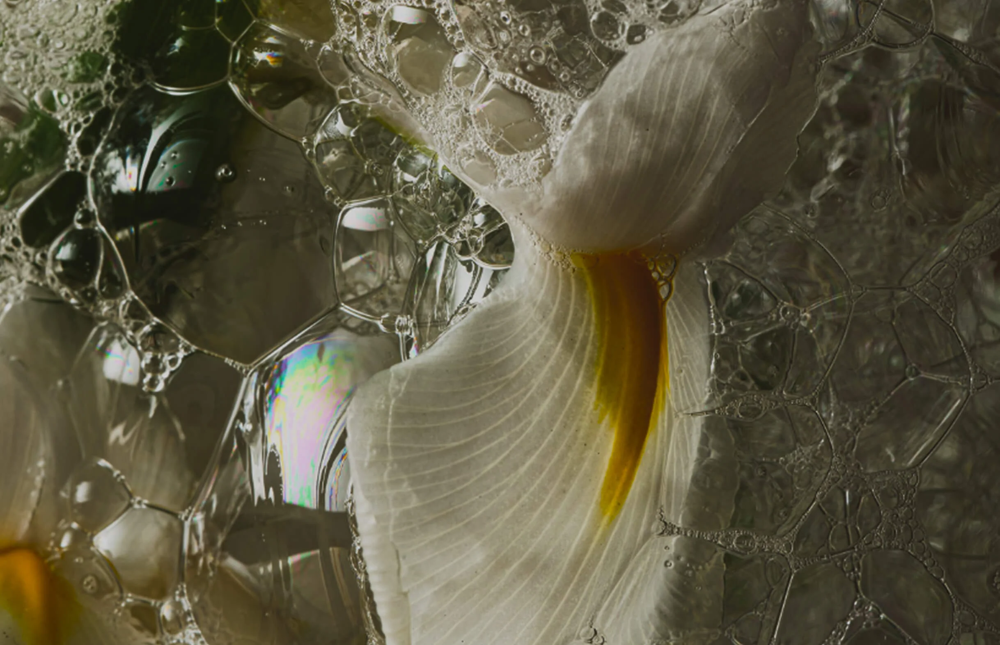
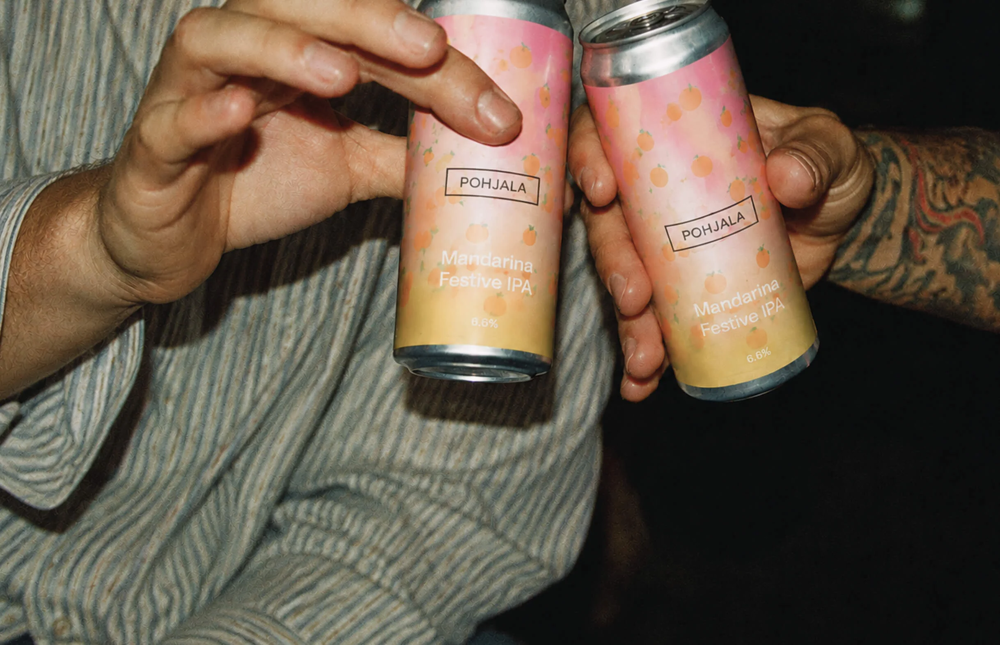
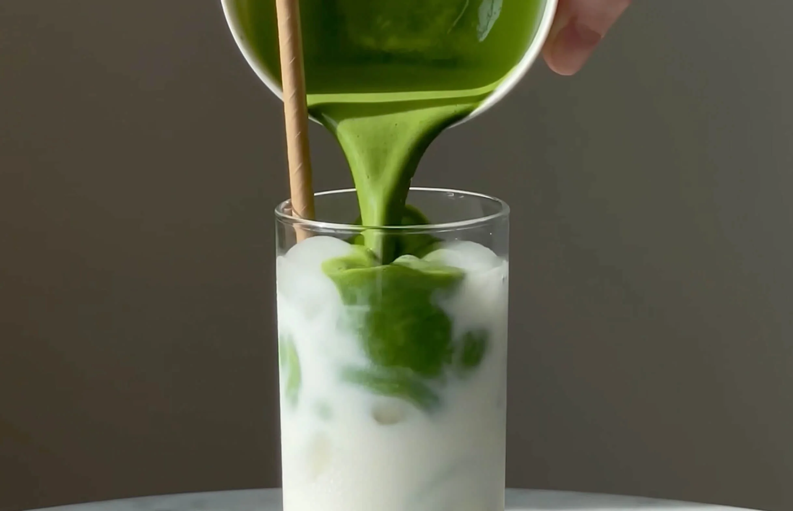

PUNTO ARCHIVES
A digital redesign for a vintage
fashion brand, bringing together
visual identity, UX/UI, content
production and social media.

A digital redesign for a vintage
fashion brand, bringing together
visual identity, UX/UI, content
production and social media.

A fictional fragrance brand
combining visual identity, UX/UI
and a dynamic e-commerce
experience built with API-driven
product data.

A webshop redesign for a
sustainable beer brand, focusing
on UX/UI, visual identity and a
more intuitive shopping
experience.

A website redesign combining UX/UI
and content production, including
art direction, photography, video
and animation.